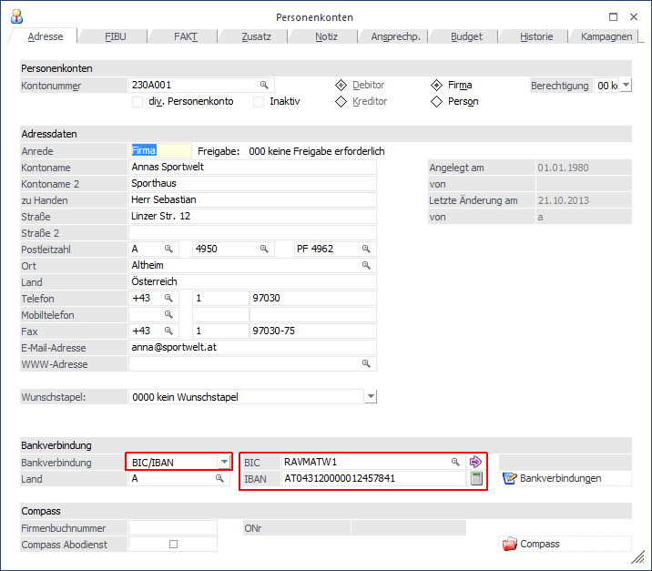
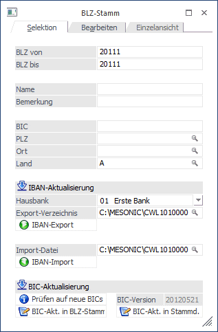
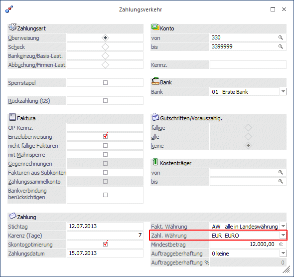
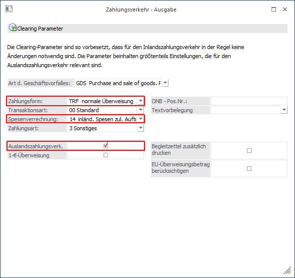

Ab 1. Juli 2003 wurde die sogenannte "EU Standardüberweisung" bzw. "EU-Binnenzahlung" eingeführt, mit der die Kosten für Auslandsüberweisungen an die Kosten für Inlandsüberweisungen angeglichen wurden.
Voraussetzungen für die Europaüberweisungen sind:
ü Der Empfänger muss sein Konto in einem EU-Staat und in € führen.
ü Die Überweisung muss in € erfolgen und darf den Betrag von € 12.500,- nicht übersteigen.
ü Der BIC und die IBAN des Empfängers sind in der Überweisung enthalten.
BIC steht für "Bank Identifier Code" und identifiziert im internationalen Banken-Netzwerk jene Bank, welche das Konto führt.
IBAN ist die Abkürzung von "International Bank Account Number" und ist die international standardisierte Schreibweise für eine Bankkonto-Verbindung.
Was muss gemacht werden, damit die "EU-Standardüberweisung" erzeugt wird:
Dafür sind mehrere Einstellungen notwendig:
Stammdaten
Im Länderstamm (WinLine START, Menüpunkt Optionen/Länderstamm) muss bei den EU-Ländern die Checkbox "EU" aktiviert sein.

Im Personenkontenstamm muss bei den Empfängerkonten eine gültige IBAN hinterlegt werden. Hierfür wurde der IBAN-Rechner eingebaut. Damit der IBAN-Rechner das richtige Ergebnis bringt, muss die BLZ und Kontonummer eingetragen werden.

Im Bankleitzahlenstamm (WinLine START, Menüpunkt Optionen/Bankleitzahlen) muss eine BIC- und IBAN Aktualisierung durchgeführt werden.
IBAN-Aktualisierung
Die IBAN-Aktualisierung erfolgt über 2 Schritte:
ü IBAN-Export: beim IBAN-Export wird die *.csv-Datei zum Export erstellt.
ü IBAN-Import: hier kann die konvertierte *.csv-Datei wieder in die WinLine importiert werden.
BIC-Aktualisierung
Im WinLine START
1 Optionen
1 Bankleitzahlen
wird die BIC-Aktualisierung durchgeführt. Dieser Vorgang besteht aus drei Schritten.
Ø 1. Schritt:
Die WinLine wird auf eine neue BIC-Version überprüft. Die BIC-Version wird daneben im Format "yyyymmdd" angezeigt.
Ø 2. Schritt:
Die BIC-Aktualisierung wird in den BLZ-Stamm geschrieben.
Ø 3. Schritt:
Die BIC-Aktualisierung wird in die Stammdaten geschrieben. Sind in den Stammdaten bereits BIC-Daten vorhanden und die BIC-Aktualisierung bringt BIC-Änderungen mit sich, werden diese Daten editiert.
Bei den folgenden BIC- bzw. IBAN-Aktualisierungen wird bei Nichtvorhandensein eines Bank-LKZ stattdessen das LKZ vom Mandantenstamm übernommen:
ü BIC-Aktualisierung der Stammdaten,
ü IBAN-Export,
ü IBAN-Import und
ü IBAN-Berechnungsbutton (hier wird das Mandantenstamm-LKZ für die Berechnung der IBAN herangezogen (nur für A und D) und im jeweiligen Fenster in das LKZ-Feld geschrieben)

Zahlungsverkehr
Als Zahlungswährung muss € verwendet werden

In den Clearing-Parametern müssen dann noch folgende Optionen eingestellt werden:
ü Zahlungsform - es darf keine "Eilüberweisung" verwendet werden, es muss die Option "TRF normale Überweisung" eingestellt werden.
ü Spesenverrechnung - Bei der Spesenverrechnung muss die Option "14 inländ. Spesen zul. Auftragg. Ausländ. Spes. Zul. Empf." gewählt werden, damit werden die Spesen je nach Aufwand an Absender und Empfänger aufgeteilt.
ü Die Option Auslandszahlungsverkehr muss aktiviert werden.

Diese Einstellungen werden beim Stapel mitgespeichert. Sinnvollerweise wird es daher für Auslandsüberweisungen einen eigenen Stapel geben, wo eben genau diese Einstellungen vorhanden sind.
Für die nachfolgenden Schritte mit Ausgabe der Datei im Clearing und Übernahme in Ihr Telebanking-Programm bzw. Übermittlung an die Bank ergeben sich - vom Ablauf her - keine Änderungen.